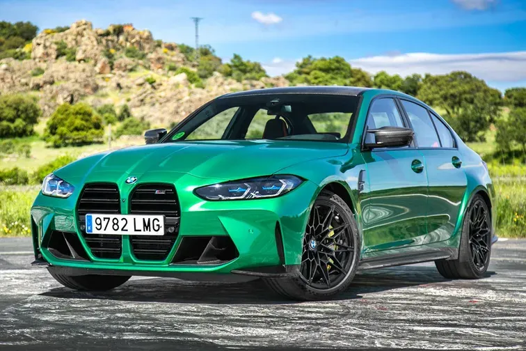

BMW M3

el bmw m3 es un clásico entre clásicos. lleva siendo uno de los coches más conocidos de la marca desde el inicio de los tiempos (1986).


el bmw m3 es un clásico entre clásicos. lleva siendo uno de los coches más conocidos de la marca desde el inicio de los tiempos (1986).